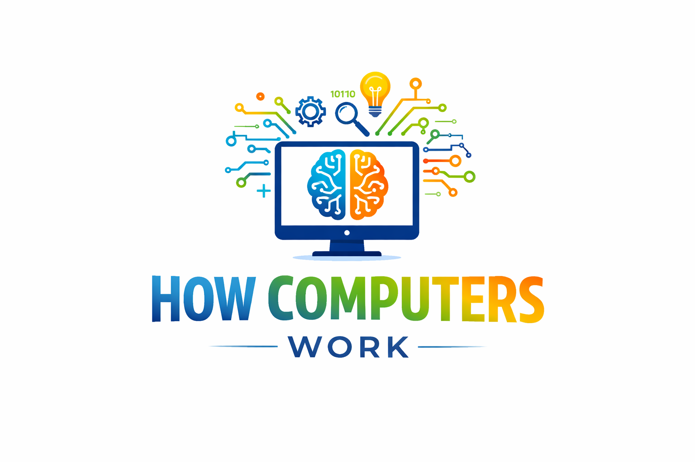

Overview
Purpose
The purpose of this website is to explain how computers work and how their main components function together. This site will simplify technical concepts so beginners can understand how hardware parts combine to make a complete system.
Audience
My intended audience is students, beginners, and anyone interested in learning more about computers. This site is especially helpful for people who want to build their own PC or understand how technology works.
Branding
Website Logo

Style Guide
Color Palette
| Primary | Secondary | Accent 1 | Accent 2 |
|---|---|---|---|
| #1f3c88 | #f4f4f4 | #00bcd4 | #333333 |
Typography
Heading Font: Arial
Paragraph Font: Helvetica
Normal paragraph example
Computers are complex machines made up of several important components. Each part has a specific role, and together they allow the system to process information, store data, and display results. Understanding these parts helps users better use and maintain their devices.
Colored paragraph example
The CPU, RAM, storage, motherboard, and power supply must all work together. If one part fails or is incompatible, the entire system may not function properly.
Navigation
Site Map
Content
Home page
Computers are powerful tools that we use every day for school, work, gaming, and communication. At their core, computers are machines that take input, process information, store data, and produce output. This website explains the main hardware components inside a computer and how they work together to make everything function smoothly.
Images for the Home page


Main Components
The CPU is known as the brain of the computer because it processes instructions. RAM stores temporary data that the CPU needs quickly. Storage devices like SSDs and HDDs hold long-term data. The motherboard connects all components, allowing them to communicate. The power supply provides electricity to every part of the system.
Images for the Page 2


How They Work Together
When you open a program, data moves from storage into RAM so the CPU can access it quickly. The CPU processes the instructions and may send information to the GPU for graphics output. The motherboard allows communication between all parts, while the power supply keeps everything running. Each component depends on the others, forming a complete and functional system.
Images for the Page 3


Wireframes
Three wireframes will be created: one for the Home page, one for Main Components, and one for How They Work Together.
Home
The home page will include a large header image, introduction text, and navigation links at the top.

Main Components
This page will include sections for each hardware component with images and descriptions.

How They Work Together
This page will show a step-by-step explanation of how data flows through the system.